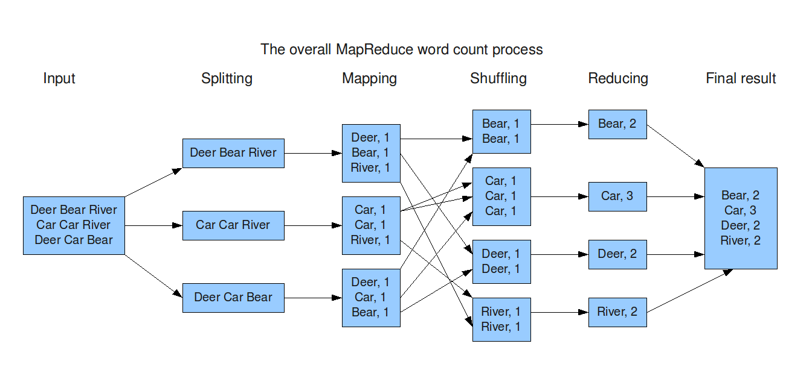
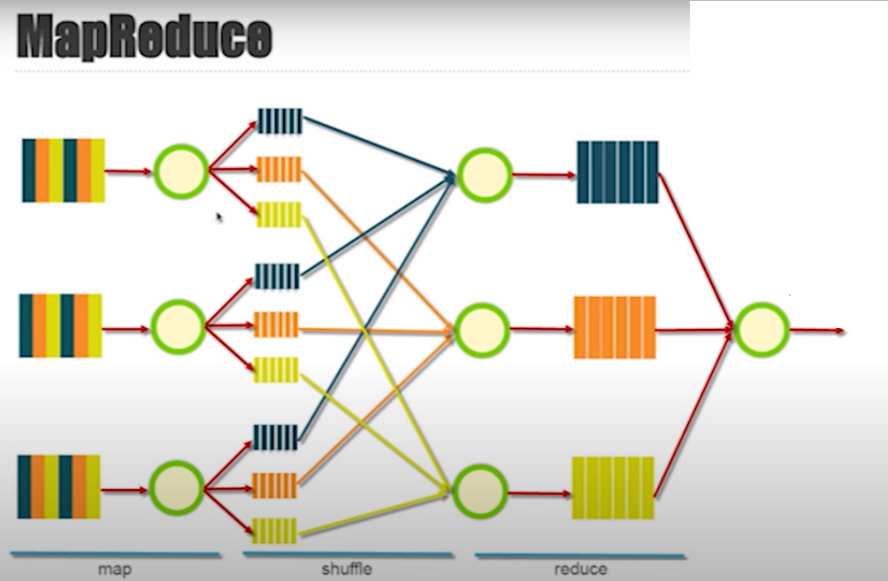
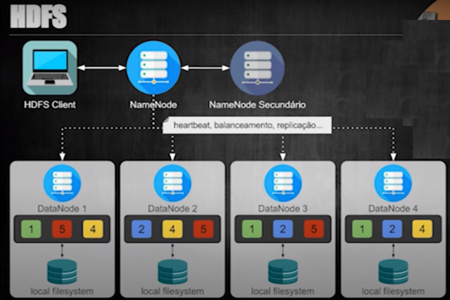
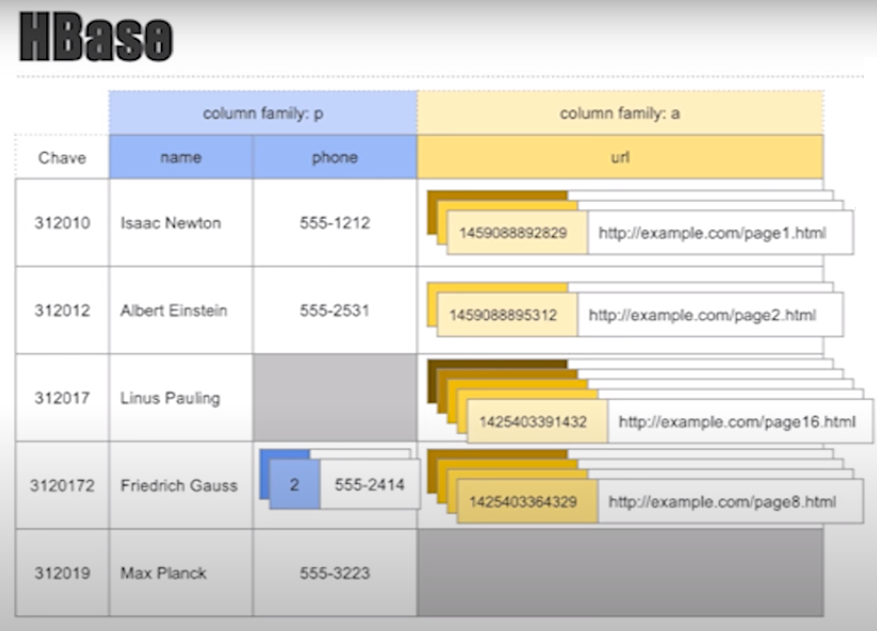
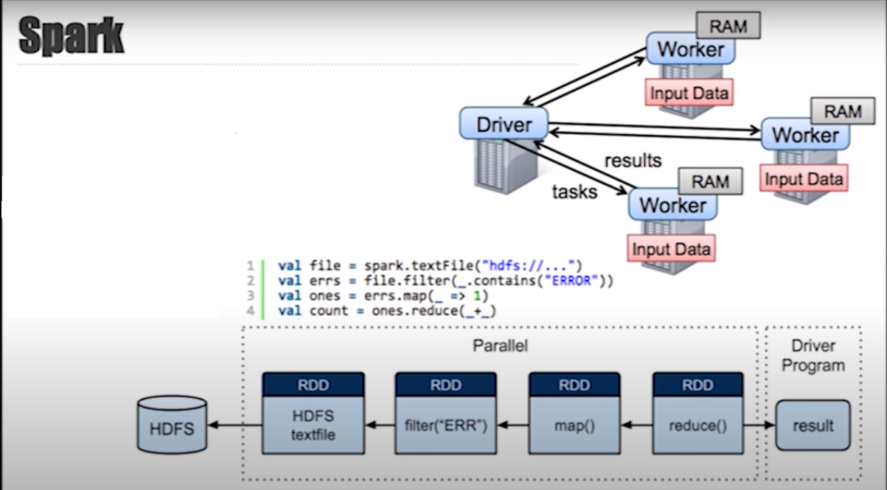

Estudos que motivaram ferramentas, Divulgados em forma de Paper.
GFS - 2003
- Sistemas de arquivos do Google;
- Sistemas de arquivos Distribuídos;
- Escalar com várias máquinas;
- Tolerante a falhas;
Map Reduce - 2006
Define um modelo de Programação paralela
Big Table - 2006
- Banco de dados NoSQL;
- Distribuídos e Paralelo;
- Banco de Chave e Valor
Ideia
- Dividir tarefas de processamento de dados em vários nós:
- dados são divididos em blocos;
- divisão de problemas grandes e/ou complexos em pequenas tarefas;
- Mapeamento é executado em paralelo nos nós
- Apenas quando o Mapeamento é encerrado redução inicia, também em paralelo
- Fase intermediária: Shuffle
- Existem tarefas que requerem apenas a etapa de Mapeamento.
Vantagens
- Escalável;
- Tolerante a falhas;
- Disponibilidade;
- Confiável;
- Utiliza conceito chave/valor;
- Não cria gargalo na rede, pois dados não trafegam (processamento no nó).


- Surgiu em 2006 no Yahoo;
- Atualmente projeto da Apache;
- Escrito em Java.
Contem:
- HDFS (Sistema de Arquivos Distribuido do Hadoop);
- Yarn (gerenciador de Recursos);
- Map Reduce.

Faz gerenciamento de arquivos em disco:
- Mantem integridade
- Segurança
- Privacidade
- Metadados
Faz parte:
NameNode: Organiza e coloca os dados em um índice.
DataNodes: Aonde ficam os dados, e os mesmos ficam replicados e divididos.


Gerenciador de recursos do Hadoop.
- Alocação de recursos de forma global e unificada no cluster
- Agendamento;
- Priorização;
- Tolerância a falhas;
- Componentes:
- Resource Manager:Um por cluster
- Application Manager:gerencia atividades, otimização, distribuição de recursos etc.
- Scheduler
- Node Manger: um por Nó.
- Responsável pela execução dos Jobs.
- Application Master: Distribui tarefas aos containers.
- Container: Mantém as Tarefas

- Não fazia parte do Hadoop e entrou depois;
- Banco de dados chave valor;
- Sem Obrigatoriedade de esquema;
- Organizado em família
- Cada célula tem versões
- Quando se precisa fazer Scan ele não é performático


- O map Reduce não atendia a todos os problemas;
- Sem muitos limites ao programador;
- Encadeamentos de funções;
- Entre o map e o reduce, existe uma persistência em disco, quando realizado pelo Hadoop;
- O Spark não faz isso caso o usuário peça;
- Usa dataframe;
- Facilidade não fazer somente o map reduce;
- Roda sobre o Hadoop;
- Executar o map reduce sem a persistencia em disco, com o máximo poder de RAM;

